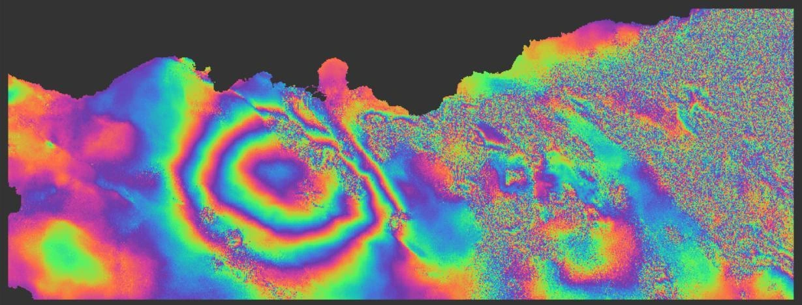
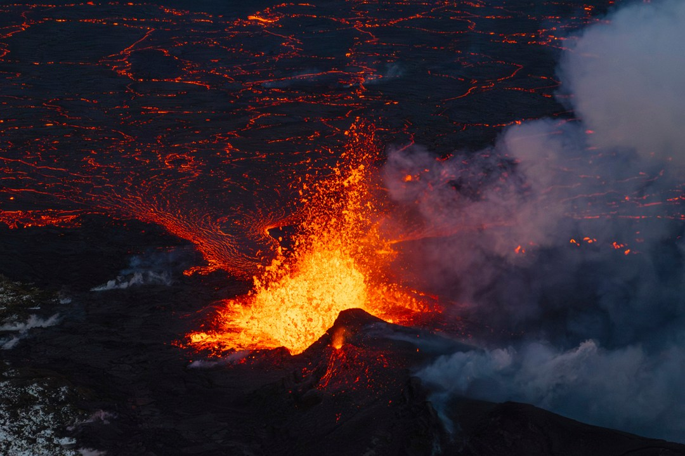
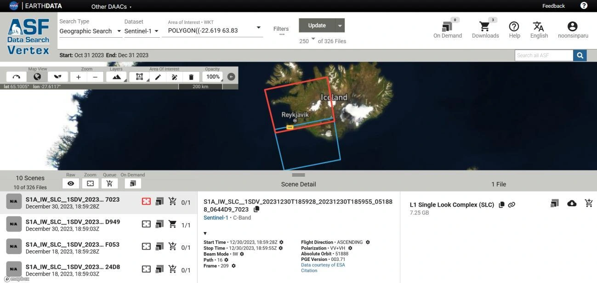
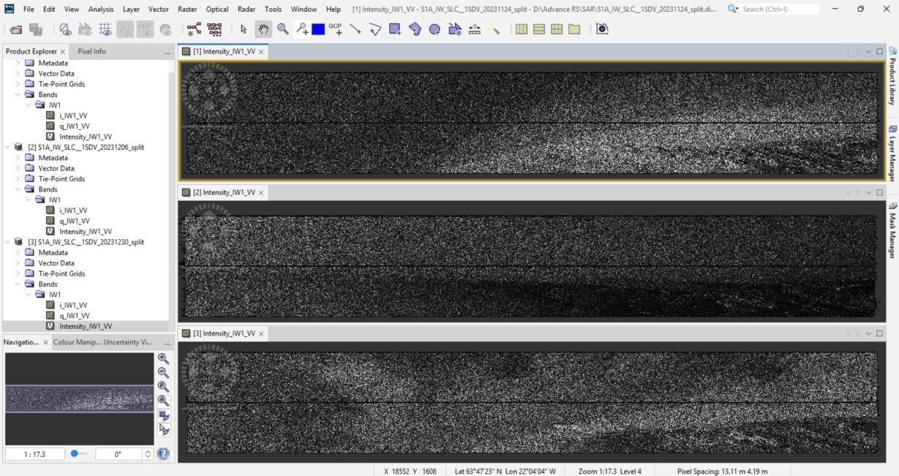
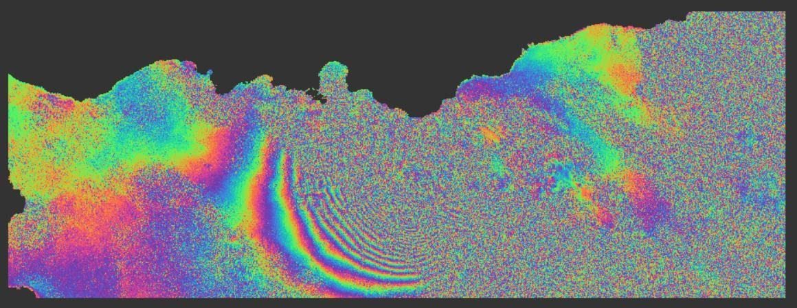
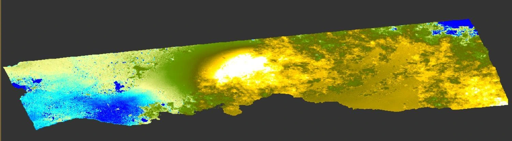

Pre-event interferogram
The 24 November–6 December pair shows curved fringes with topographic phase retained. Noisy areas make parts of the pattern harder to interpret.

Remote Sensing · Sentinel-1 · InSAR
Tracing volcanic deformation in Iceland
Comparing radar phase before and across an eruption can reveal how the ground changes. This project explores topographic and differential interferometry around Grindavík on the Reykjanes Peninsula, using Sentinel-1 observations and a terrain-corrected displacement result.

ArcGIS StoryMaps
Detecting Volcanic Deformation at Grindavík with Sentinel-1 Radar
StoryMap in progress
Study area & purpose
The Reykjanes Peninsula is a volcanic landscape in southwest Iceland. This analysis focuses on the period around the first Sundhnúkur eruption in December 2023 and asks how an event-spanning interferogram differs from a pre-event pair that retains topographic phase.
Interferometric SAR (InSAR) compares the phase of radar observations acquired at different times. The resulting fringes help examine spatial changes that may be associated with ground deformation, while also reflecting other sources of phase variation.
12-day interval; topographic phase retained.
24-day interval; estimated topographic phase removed.
Public data & tools

Processing approach
Apply S-1 TOPS Split to all three scenes using subswath IW1, VV polarization, and bursts 8–9, then apply orbit correction.
Use S-1 Back-Geocoding and the Copernicus DEM to coregister the pre-event and event-spanning stacks.
Calculate phase differences, subtract the flat-earth phase, and merge the TOPS bursts with TOPSAR Deburst.
Retain the topographic contribution in the pre-event result. Remove the estimated topographic phase from the event-spanning pair to obtain the differential result.
Apply multilooking and Goldstein Phase Filtering to improve the visual continuity of the fringe patterns.
Export the differential phase to SNAPHU, import the unwrapped result, convert phase to displacement, and apply Range Doppler Terrain Correction.

Results
The 24 November–6 December pair shows curved fringes with topographic phase retained. Noisy areas make parts of the pattern harder to interpret.

The 6–30 December pair shows denser fringes in the middle-left area after topographic phase removal, consistent with a stronger non-topographic phase gradient.

The pairs cover different time intervals and use different phase treatments. Their contrast is informative, but it does not isolate deformation by itself: atmospheric effects, coherence loss, orbit uncertainty, and DEM errors can also influence phase.
From phase to a spatial pattern
After phase unwrapping and conversion, the terrain-corrected result shows a pronounced colour contrast around the area of dense differential fringes. It provides a spatial view of the derived line-of-sight displacement signal over the event-spanning period.

The workflow demonstrates how removing a terrain contribution changes the interpretation of radar phase and how unwrapping enables a displacement product. The event-spanning pattern is consistent with possible volcanic deformation, but the result remains an exploratory analysis rather than a validated measurement of vertical ground motion.
Further interpretation would require coherence assessment, checks on unwrapping and the reference point, a calibrated numerical legend, and comparison with independent observations. Radar measures along the satellite’s line of sight, so a single viewing geometry does not directly separate vertical and horizontal motion.
Produced using Copernicus WorldDEM-30 © DLR e.V. 2010–2014 and © Airbus Defence and Space GmbH 2014–2018, provided under COPERNICUS by the European Union and ESA; all rights reserved.
← Back to Remote Sensing